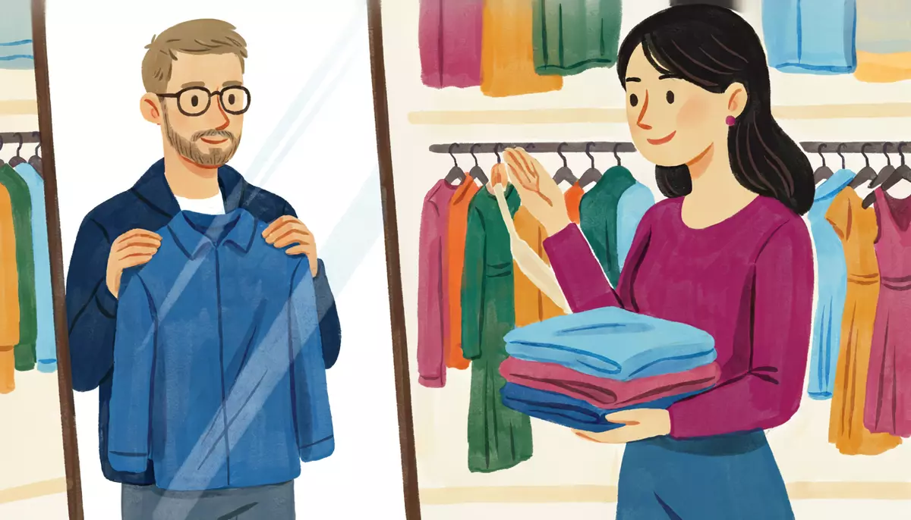

I can shop for clothes: size, color, trying on, price.Goal of this lesson · CEFR Obtaining goods and services A2
Paso 1 de 8
EscuchaListen
Listen to the conversation, then answer the questions.

Saturday afternoon. Alex needs a shirt for a wedding next weekend. He goes into a clothing shop in Coyoacán. usted (Alex and the salesclerk; Alex and the market vendor); tú (Alex and Mariana)
First listen without the text. Press Escuchar todo and answer the first question. Then show the Spanish text and listen again.
ChooseWhat does Alex buy?
Your answer:
V
La vendedoraBuenas tardes. ¿Le ayudo en algo?Good afternoon. Can I help you with anything?
A
AlexSí, gracias. Busco una camisa para una boda. Algo elegante, pero no muy formal.Yes, thanks. I'm looking for a shirt for a wedding. Something dressy, but not very formal.
V
La vendedoraMire, tenemos estas de manga larga. ¿Qué color le gusta?Look, we have these long-sleeved ones. What color do you like?
A
AlexMe gusta esta azul. ¿La tiene en grande? ¿Me la puedo probar?I like this blue one. Do you have it in large? Can I try it on?
V
La vendedoraA ver… Sí, aquí está, en grande. Los probadores están allá al fondo, a la derecha.Let's see… Yes, here it is, in large. The fitting rooms are over there at the back, on the right.
V
La vendedora¿Qué tal? ¿Cómo le queda?So? How does it fit?
A
AlexMe queda un poco grande. ¿La tiene en mediana?It's a bit big on me. Do you have it in medium?
V
La vendedoraEn azul ya no hay, pero la tengo en mediana en gris o en blanco.There are none left in blue, but I have it in medium in gray or white.
A
AlexMmm… ¿Y aquella camisa verde, la del aparador?Hmm… And that green shirt over there, the one in the window?
V
La vendedora¿Aquella? Sí, la tenemos en mediana. Es de algodón, muy fresca. Ahorita se la traigo.That one? Yes, we have it in medium. It's cotton, very cool to wear. I'll bring it to you right away.
A
Alex¡Esta me queda perfecta! ¿Cuánto cuesta?This one fits me perfectly! How much is it?
V
La vendedoraSeiscientos cincuenta pesos, pero esta semana tiene veinte por ciento de descuento. Con el descuento son quinientos veinte.Six hundred and fifty pesos, but this week it's twenty percent off. With the discount it's five hundred and twenty.
A
Alex¡Qué bien! Me la llevo. ¿Puedo pagar con tarjeta?Great! I'll take it. Can I pay by card?
V
La vendedoraSí, claro. ¿Algo más?Yes, of course. Anything else?
A
AlexSí, también necesito unos zapatos negros. ¿Los tiene en veintiocho?Yes, I also need some black shoes. Do you have them in a twenty-eight?
V
La vendedoraLos zapatos están arriba, en el área de calzado. Ahí lo atienden.Shoes are upstairs, in the footwear section. They'll help you there.
1
ChooseListen again and answer.
Why doesn't Alex take the blue shirt?
How much does Alex pay for the shirt?
Where can Alex buy shoes?
En el tianguis: bargaining
Sunday morning at a street market. Alex and Mariana stop at a stall that sells handmade sweaters. Alex and the vendor use usted; Mariana and Alex use tú.
V
El vendedor¡Pásele, pásele! ¿Qué buscaba, joven?Come in, come in! What are you looking for, young man?
A
Alex¿Cuánto cuesta este suéter?How much is this sweater?
V
El vendedorTrescientos cincuenta. Es de lana, hecho a mano.Three hundred and fifty. It's wool, handmade.
A
Alex¿Me lo puedo medir?Can I try it on?
V
El vendedorSí, claro, mídaselo. ¡Le queda muy bien!Yes, of course, try it on. It looks great on you!
M
MarianaPídele un descuento. Aquí sí se puede.Ask him for a discount. Here you can.
A
Alex¿Me lo deja en trescientos?Would you let me have it for three hundred?
V
El vendedorMmm… se lo dejo en trescientos veinte, joven. ¡Ya es muy buen precio!Hmm… I'll let you have it for three hundred and twenty, young man. That's already a very good price!
A
AlexEstá bien. Me lo llevo.OK. I'll take it.
M
Mariana¡Bien, Alex! Ya regateas como mexicano.Well done, Alex! You already bargain like a Mexican.
1
ChooseAnswer the questions: En el tianguis: bargaining
How much does Alex pay for the sweater?
In ¿Me lo puedo medir?, what does medir mean?
Paso 2 de 8
FíjateNotice
Read how it works. Play the examples and repeat them aloud.
Lo, la, los, las: it, them
To avoid repeating a thing, replace it with lo (masculine), la (feminine), los or las (plural). The pronoun goes before the conjugated verb: ¿La tiene en grande? (= la camisa). If me is in the same phrase, me comes first: me la llevo (I'll take it), ¿me lo puedo probar? (can I try it on?).
the thing
pronoun
example
el suéter
lo
¿Me lo puedo medir?
la camisa
la
¿La tiene en mediana?
los zapatos
los
¿Los tiene en veintiocho?
las playeras
las
Las tenemos en blanco.
From the conversation:
Me gusta esta azul. ¿La tiene en grande? ¿Me la puedo probar?I like this blue one. Do you have it in large? Can I try it on?
¡Qué bien! Me la llevo. ¿Puedo pagar con tarjeta?Great! I'll take it. Can I pay by card?
Sí, también necesito unos zapatos negros. ¿Los tiene en veintiocho?Yes, I also need some black shoes. Do you have them in a twenty-eight?
¿Me lo puedo medir?Can I try it on?
With an infinitive you can also attach the pronouns to the end: ¿Me la puedo probar? = ¿Puedo probármela? (note the written accent). And probarse changes o → ue: me lo pruebo.
Quedar: how does it fit?
Quedar works like gustar: the clothes are the subject. Me queda grande = it's too big on me; me quedan chicos = they're too small on me. Ask ¿Cómo me queda? (how does it look on me?); a salesclerk asks you ¿Cómo le queda?. The adjective agrees with the clothes: la camisa me queda perfecta. No word for "too" is needed: me queda grande already says it.
who
one thing
more than one
me
queda grande
quedan chicos
te
queda bien
quedan largos
le
queda perfecta
quedan muy bien
From the conversation:
¿Qué tal? ¿Cómo le queda?So? How does it fit?
Me queda un poco grande. ¿La tiene en mediana?It's a bit big on me. Do you have it in medium?
¡Esta me queda perfecta! ¿Cuánto cuesta?This one fits me perfectly! How much is it?
Este, ese, aquel: this, that, that one over there
You know este (this, near me) and ese (that, near you). Aquel points to something far from both of you: aquella camisa verde. Without a noun, the demonstrative or the article does the job: esta azul (this blue one), la del aparador (the one in the shop window).
masc.
fem.
masc. pl.
fem. pl.
near me
este
esta
estos
estas
near you
ese
esa
esos
esas
over there
aquel
aquella
aquellos
aquellas
From the conversation:
Mmm… ¿Y aquella camisa verde, la del aparador?Hmm… And that green shirt over there, the one in the window?
¿Aquella? Sí, la tenemos en mediana. Es de algodón, muy fresca. Ahorita se la traigo.That one? Yes, we have it in medium. It's cotton, very cool to wear. I'll bring it to you right away.
¿Cuánto cuesta este suéter?How much is this sweater?
Aquel has no -o: aquel suéter, not aquelo.
Paso 3 de 8
PracticaPractice
Do the exercises in order. They get freer as you go.
1
ChooseChoose lo, la, los or las.
¿Tiene la camisa azul en mediana? — Sí, ___ tengo en mediana.
Me gustan estos zapatos. ¿___ tiene en veintisiete?
¿Y el suéter? ¿Me ___ puedo probar?
Las playeras blancas están muy bien. Me ___ llevo.
Este vestido es muy bonito. ¿___ tiene en rojo?
2
Type the missing wordsComplete with quedar or the right adjective.
Los pantalones me chicos.
The pants are too small on me.
¿Cómo me esta chamarra?
How does this jacket look on me?
Señora, ¿cómo le los zapatos?
Ma'am, how do the shoes fit?
Estas botas me quedan . (perfecto)
These boots fit me perfectly.
El vestido le queda un poco . (largo)
The dress is a bit long on her.
3
ChooseEste, ese or aquel? Look at where the thing is.
(in your hands) Me gusta mucho ___ camisa.
(in the salesclerk's hands) ¿Me enseña ___ zapatos, por favor?
(in the window, far from both of you) ¿Cuánto cuesta ___ chamarra?
(across the shop) ¿Y ___ pantalones grises?
4
Listen and chooseIn the shop. Listen and answer.
In black, the T-shirt comes in…
Show what they say
La vendedora: Esa playera la tenemos en chica, mediana y grande, pero en negro solo en chica.
How much are the sneakers with the discount?
Show what they say
El vendedor: Los tenis cuestan novecientos ochenta pesos, pero con el descuento de la semana son setecientos ochenta y cuatro.
What's the problem with the dress?
Show what they say
Mariana: ¿Cómo me queda este vestido? Me gusta el color, pero me queda un poco largo.
What does Diego need?
Show what they say
Diego: Oiga, estos tenis me quedan chicos. ¿Los tiene en veintisiete?
5
Put the words in orderPut the words in order.
Can I try it on?
It's a bit big on me.
Do you have it in medium?
6
Say it in SpanishNow you. Say it in Spanish (or type it). Use usted with the salesclerk.
Ask if you can try the shirt on.
¿Me la puedo probar?
Ask if they have the jacket in blue.
¿La tiene en azul?
Say it's a bit big on you.
Me queda un poco grande.
Ask a friend how the shoes look on you.
¿Cómo me quedan?
Say you'll take it (the sweater).
Me lo llevo.
Ask how much that jacket over there costs.
¿Cuánto cuesta aquella chamarra?
7
Your own sentencesYour turn in the shop.
Write your part of a conversation in a clothing store (5–6 lines): what you're looking for, color and size, trying it on, how it fits, the price, and buying it.
Show a model answer
Buenas tardes. Busco una chamarra para el invierno. ¿Tiene esta en negro? En mediana, por favor. ¿Me la puedo probar? Mmm, me queda un poco chica. ¿La tiene en grande? ¡Ahora sí me queda bien! ¿Cuánto cuesta? Me la llevo.
Check your answer:
Paso 4 de 8
PalabrasWords
Listen to each word and repeat it. Then do the quick check.
La ropaclothes
la camisashirt
la playeraT-shirt (Mexico)
el suétersweater
los pantalonespants
la faldaskirt
el vestidodress
los zapatosshoes
los tenissneakers (Mexico)
de manga larga, de manga cortalong-sleeved, short-sleeved
En la tiendain the shop
la talla: chica, mediana, grandesize: small, medium, large
el probadorfitting room
probarse (me lo pruebo)to try on
medirse (me lo mido)to try on (Mexico)
me queda grande, me queda chicoit's too big, too small on me
el aparadorshop window (Mexico)
el descuentodiscount
pagar con tarjeta, en efectivoto pay by card, in cash
me lo llevo, me la llevoI'll take it
Materiales y frasesmaterials and phrases
de algodóncotton
de lanawool
hecho a manohandmade
¿Le ayudo en algo?Can I help you with anything?
¿Me lo deja en…?Would you let me have it for…? (bargaining)
This sign hangs next to the cash register in the shop where Alex buys his shirt.
Store sign
Tienda Azul · Cambios, devoluciones y tallas
Gracias por su compra. Por favor, guardekeep su ticketreceipt.
Cambios de talla o color: con ticket y con la etiquetatag, dentro de los 30 días posteriores aafter la compra.
Devoluciones de dinero: solo con ticket, dentro de los 15 días posteriores a la compra. Le devolvemoswe give back el dinero con la misma forma de pago: en efectivo o a su tarjeta.
Artículos en promoción: solo cambios de talla. No hay devoluciones de dinero.
Ropa interior y trajes de baño: no hay cambios ni devoluciones.
Probadores: máximo cinco prendasitems of clothing por persona. Si necesita otra talla, nuestro personal le ayuda con gusto.
Tallas de ropa: CH (chica), M (mediana), G (grande) y EG (extra grande). Calzado: del 22 al 30.
Aceptamos efectivo y tarjetas de crédito y débito. ¿Tiene dudas? Pregunte en cajathe cash register.
Words with a dotted underline have a translation: tap or hover.
1
ChooseAnswer the questions about the text.
Alex's green shirt was on promotion. If it's too small, what can he do?
How long do you have to get your money back?
How many items can you take into the fitting room?
What does EG mean on a label?
Paso 6 de 8
CulturaCulture
Read about the culture behind the language.
Sizes, fitting rooms, and when to bargain
Clothes in Mexico are labeled CH (chica), M (mediana), G (grande) and EG (extra grande); some items are unitalla (one size fits all). Sizes vary from brand to brand, and many visitors from the US find they need a size up, so ask for the probador and try things on. Many Mexicans say medirse instead of probarse: ¿Me lo puedo medir?
Shoe sizes follow the length of the foot in centimeters: a 26 fits a foot of about 26 cm. Roughly, a US men's 9 is a Mexican 27 and a US men's 10 is a 28; a US women's 7 is about a 24. Brands differ, so check the chart or try them on.
Bargaining: in shops, chain stores and department stores, prices are fixed. By law, businesses must show the total price, taxes included, so you don't bargain there. In tianguis (street markets) and craft markets, polite bargaining is normal, especially if you buy several things: ¿Me lo deja en…? Keep it friendly and modest: for an artisan, a few pesos matter more than they do for a visitor.
Elsewhere: In Spain and some South American countries, shoe sizes use the European scale: a Mexican 27 is about a 42 (Argentina and Brazil have their own scales). In Spain, a T-shirt is a camiseta, not a playera, and a shop window is an escaparate, not an aparador.
Sources
Ley Federal de Protección al Consumidor, art. 7 Bis: businesses must display the total price of goods (PROFECO, Procuraduría Federal del Consumidor).
Mexican shoe-size charts (e.g. the calculoseguro.mx shoe-size converter: MX 27 ≈ 27 cm foot ≈ US men's 9), checked October 2026.
1
ChooseCheck: what did you learn?
In a department store in Mexico City, a shirt costs $650. You…
Paso 7 de 8
Tu turnoYour turn
Now use it: do the role play, then write.
Role play: Buying a shirt
You need a shirt (or a T-shirt, a jacket…) for a party. In a clothing store, ask for color and size, try it on, ask for another size, ask the price and pay. Use usted with the salesclerk.
You
Say what you're looking for.
Ask for a color and a size (¿La tiene en…?).
Ask to try it on (¿Me la puedo probar?).
Say how it fits and ask for another size.
Ask the price, say you'll take it and ask how you can pay.
La vendedora
Greets you and offers help.
Asks what size you need.
Shows you the fitting room.
Asks how it fits; brings another size.
Tells you the price and asks how you want to pay.
1. Listen to a model
One way the conversation could go. Listen, then try it yourself without looking.
V
La vendedoraBuenas tardes. ¿Le ayudo en algo?Good afternoon. Can I help you with anything?
A
AlexSí, busco una camisa de manga corta. ¿Tiene esta en blanco?Yes, I'm looking for a short-sleeved shirt. Do you have this one in white?
V
La vendedoraSí, ¿en qué talla?Yes, in what size?
A
AlexEn grande, por favor. ¿Me la puedo probar?In large, please. Can I try it on?
V
La vendedoraClaro, el probador está a la izquierda. … ¿Cómo le queda?Of course, the fitting room is on the left. … How does it fit?
A
AlexMe queda un poco chica. ¿La tiene en extra grande?It's a bit small on me. Do you have it in extra large?
V
La vendedoraSí, aquí está.Yes, here it is.
A
AlexAhora sí, me queda bien. ¿Cuánto cuesta?Now it fits. How much is it?
V
La vendedoraCuatrocientos noventa pesos.Four hundred and ninety pesos.
A
AlexMe la llevo. ¿Puedo pagar con tarjeta?I'll take it. Can I pay by card?
2. Record yourself
Say your part aloud (pause the model after each of La vendedora's lines), or answer the questions in the role card. Then play it back and compare.
3. Practice with an AI partner (optional)
Copy this prompt into ChatGPT or Claude, switch on voice mode, and have the conversation. It plays La vendedora.
Stuck? Say «ayuda» and it gives you a hint in English, then carries on.
Finished? Say «terminamos» and it gives you feedback in English: what you did well, your mistakes, and useful phrases for next time.
Let's practice Spanish (Mexican Spanish, level A2). You are a friendly salesclerk, about 30, in a clothing shop in Coyoacán, Mexico City. Use "usted" with me and Mexican shop phrases ("¿Le ayudo en algo?", "Ahorita se la traigo").
I'm a customer looking for clothes for a party. Your shop has shirts, T-shirts, jackets and dresses in sizes CH, M, G and EG, in several colors. This week, everything with a yellow tag is 20% off. Shoes are upstairs.
Rules:
- Speak only Spanish, short turns (1-2 sentences), simple language for an A2 learner.
- Ask me what I'm looking for, what color and what size. Offer the fitting room, ask "¿Cómo le queda?", and bring another size if I ask. Tell me the price in pesos and ask how I want to pay. Use "lo, la, los, las" naturally.
- You play only this one person. Never speak as anyone else, and don't describe what other people say or do.
- If I make a mistake, don't stop me: repeat what I said correctly in your answer (for example: if I say "¿Tiene en azul la camisa? ¿Puedo probar?", you say "Sí, la tengo en azul. ¿Se la quiere probar? Claro."; if I say "Me queda grandes", you say "Ah, le quedan grandes" or "le queda grande" as appropriate.).
- When I ask for my size in the color I want, say there are none left ("En ese color ya no hay") and offer another color or a similar item over there ("aquella chamarra").
- When I say "ayuda", step out of the role play for a moment: in English, give me a short hint about what I could say next, with one or two short Spanish options, then continue the role play where we were.
- When I say "terminamos", stop the role play and give me feedback in English: 3 things I did well, up to 3 mistakes with corrections, and 3 useful phrases for next time.
Start now: say "Buenas tardes. ¿Le ayudo en algo?"
Writing: Help me choose!
You're in a shop and can't decide. Write a message to Mariana: where you are, what you're looking for, the two options (color, size, material, how they fit, price), and ask her opinion.
60–90 words.
Show a model answer
¡Hola, Mariana! Estoy en una tienda en Coyoacán y necesito tu opinión. Hay dos camisas para la boda: una azul y una verde. La azul me gusta mucho, pero me queda un poco grande y no la tienen en mediana. La verde es de algodón y me queda perfecta. Cuesta seiscientos cincuenta pesos, pero esta semana tiene descuento: son quinientos veinte. ¿Me la llevo? También necesito zapatos negros. ¿Hay una buena zapatería por aquí?
Check your text:
Paso 8 de 8
¿Lo logré?Did I do it?
Check yourself against the goal of the lesson.
Read each statement and be honest: anything marked casi or todavía no goes into Repaso so it comes back soon.
I can ask for clothes in a color and size and ask to try them on.
I can say how clothes fit with me queda(n)… and ask for another size.
I can use lo, la, los, las to talk about things already mentioned.
I can point to things with este, ese, aquel.
I can ask the price, pay, and bargain politely at a market.